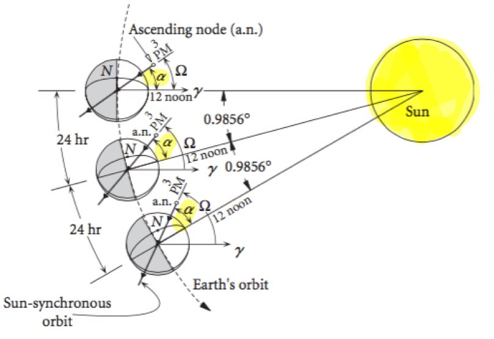
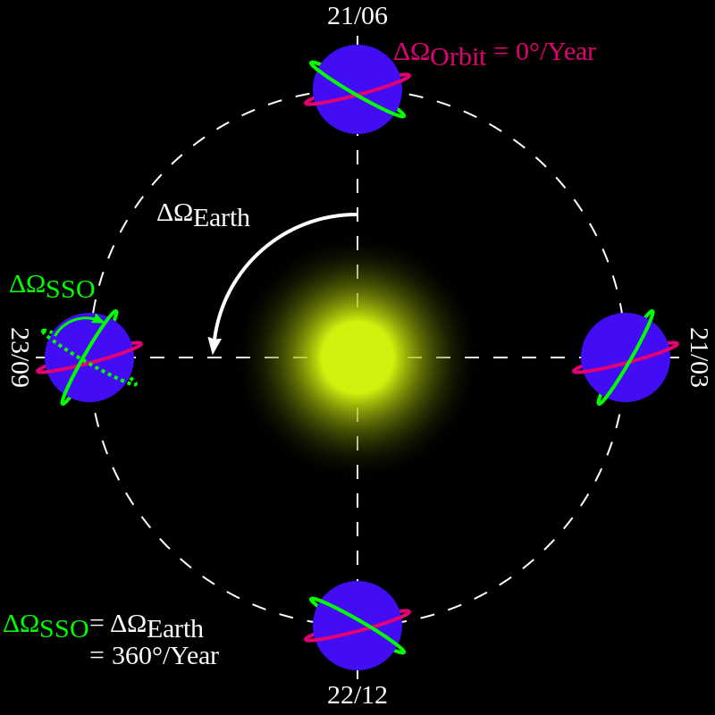
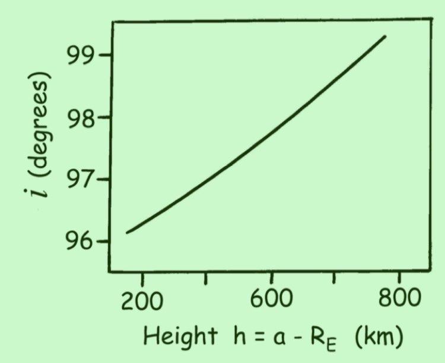
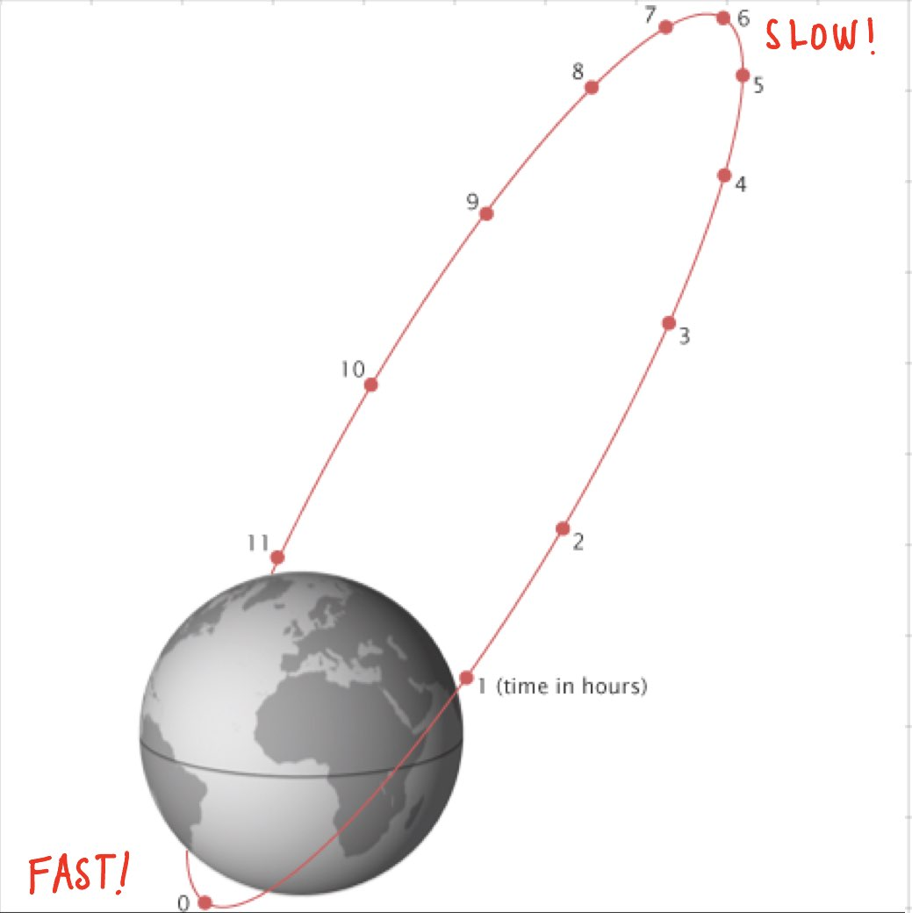
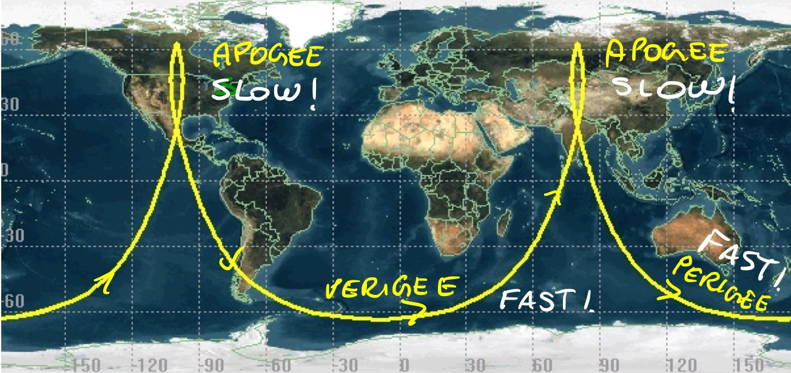
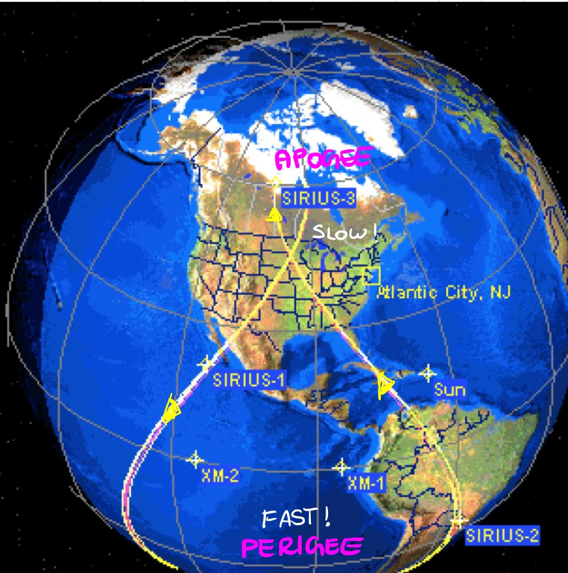

Special Orbits#
Prepared by: Emmanuel Airiofolo and Angadh Nanjangud
In this lecture we cover the following topics:
Sun Synchronous Orbit#
Exploits the secular variation of \(\Omega\) due to \(J_2\) such that space craft arrives over a particular location at the same local solar time at each pass.
The relative geometry between the orbit plane and the Sun-Earth vector (\(\alpha\)), remains approximately constant over the year:
Sun Synchronous Orbit

If \(\alpha\) = constant;
This is acheved by exploiting \(J_2\) perturbation selecting a proper value for the inclination;
As we want \(\dot {\Omega} > 0\) ⇒ i > \(90^\circ\) ⇒ Sun-Synchronous orbits are retrograde!
\(\alpha_s\) = The right ascension of the Sun.
\(\alpha\) = Hour angle with respect to the ascending node.
\(\gamma\) = Reference angle.
J2 Perturbations#
The earth is geometrically an oblate shere, due to the centrifical forces generated by its rotation. This oblateness results in the diameter of the earth at the equator to be larger than at the poles. The perturbating force that results from the Earth’s oblateness is known as the \(J_2\) perturbation. There are other perturbation factors, however \(J_2\) is the strongest pertubating factors on orbits.
\(J_2\) perturbations will move the Right Ascension of the Asceending Node (RAAN) over time at a constant rate depending on the orbit’s size, shape, and inclination. Using this property of \(J_2\) perturbations, we can manipulate our orbit so that the RAAN changes at a rate of 360 \({^\circ}\)/year, keeping the orbit in the same orientation with respect to the Sun. This manipulation would result in the sun syncronous orbit as shown in the green orbit. However, if we did not account for \(J_2\), would have the red orbit in the picture below:
Sun-Synchronous Orbit vs Non Sun-Synchronous Orbit

Sunsynchronous orbits are typically Low Earth Orbits (LEO) used for remote sensing. LEO orbits are typically between 400 km and 800 km above the earth’s surface. Properties include:
Low altitude for better image resolution.
The Altitude is high enough to limit atmospheric drag.
Low eccentricity for uniform resolution.
Almost polar orbits that are good for global mapping (Typical inclination at Low Earth Orbits).
Retrograde for constant illumination condition.
Typical inclination at Low Earth Orbits

Repeat Groundtrack Orbits#
This Orbit is designed such that the groundtrack repeats after \(n\) orbits and \(m\) days often to access the same targets.
It is a constraint on orbit period ⇒ on the semi-major axis:
\(\omega_E\) = Angular momentum of the Earth.
The simplification of both equations results in the ratio between the orbit period (\(T\)) and sidereal day (\(T_\gamma\)):
This ratio is a rational number.
Make reference to solar vs sidereal day.
Geosynchronous Orbits#
Here \(n = m = 1\), where an orbit is completed as one day is completed.
We can simplify this to get the semi-major axis for a Geosynchronous orbit:
The groundtrack of this orbit is the figure 8.
Geostationary Orbits (GEO)#
This orbit has the same parameters as the Geosynchronous Orbit with the inclination of the orbit set at Zero. Hence:
The subsatellite point is fixed.
The orbit is equitorial, and high latitudes are not covered.
Sunsynchronous Repeat Groundtrack Orbits#
The Sunsynchronous orbit where the RAAN (\(\Omega\)) precesses East at approximately \(1^\circ\)/day
\(T_\odot\) = Solar day = 86,400 seconds.
\(Y\) = the number of solar days in a year = 365.256 days.
Note that there are (Y + 1) sidereal days in 1 year.
The semi-major axis is known for given \(n,m\):
The minimum groundtrack seperation (\(\Delta\lambda_{min}\)) is gven by:
Typical Design Procedures:
Given instrument and resoultion (i.e: FOV and Pixels), \(a^*\) and \(T^*\) can be approximated. (The ‘*’ are there to signify approximated values)
For global coverage, \(d_{min} < swath\) ⇒ lower bound for \(n^*\).
Find \(m\) from \(m^*\):
(255)#\[m^* = \frac{T^*n^*}{T\odot}\]From \(m^*,n^*\) compute the new \(T^*\). Then test for \(a^*\) from point 1.
Make reference to solar vs sidereal day.
Molniya Orbits#
Repeat grountrack, where \(n = 2, m = 1\):
Eccentricity is high enough such that the subsatellite point is almost fixed at \(e = 0.72\).
The almost fixed area is more common at higher latitudes which are mainly used for telecommunication ⇒ \(\omega\) = \(-90^\circ\).
To avoid the precession of Argument of Perigee (AOP), the critical inclination is defined by ⇒ \(i = 63.4^\circ\)
Molniya Orbit

Groundtrack of Molniya Orbits

Tundra Orbits#
Same as molniya, but \(n = m = 1\) making it a Geosynchronous orbit.
Eccentricity is set at 0.825.
Groundtrack of Tundra Orbits

References#
ai-solutions.com. (n.d.). J2 Perturbation. [online] Available at: https://ai-solutions.com/_freeflyeruniversityguide/j2_perturbation.htm#:~:text=J2 perturbations will imove the
alfonsogonzalez.github.io. (n.d.). Astrodynamics Interactive Demo. [online] Available at: https://alfonsogonzalez.github.io/AWP/#